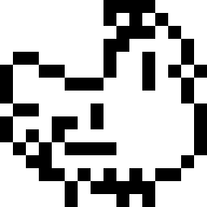

Test Your Working Memory
Idea taken from Chimpanzee Test and improved upon.
This current build is based on an earlier concept, expect changes.
Click the squares in order according to their numbers.
The test will get progressively harder.
Click the button above to start the test
TEKSTAS

yoyoyoyo